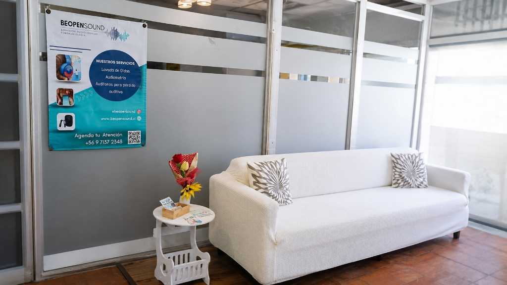
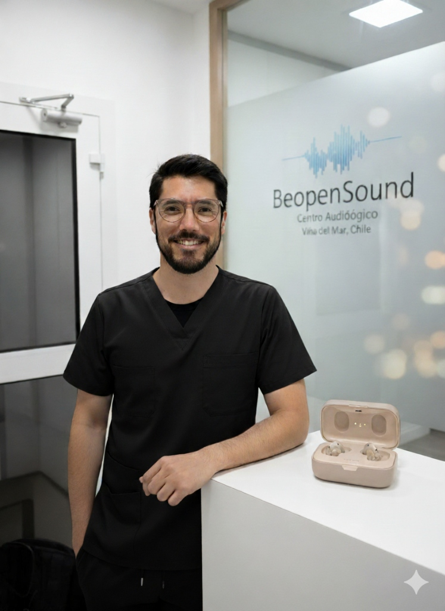

Conoce BeopenSound
Centro auditivo especializado en Viña del Mar, con atención profesional dedicada y personalizada.
Nuestra Historia
BeopenSound nace de la convicción de que la salud auditiva merece una atención profesional cercana, personalizada y basada en la evidencia clínica. Ubicados en Viña del Mar, nos especializamos en ofrecer soluciones auditivas que van más allá de la simple venta de un dispositivo.
Entendemos que cada persona tiene necesidades únicas, y por eso nuestro enfoque está centrado en el paciente: desde la primera evaluación hasta el seguimiento continuo, buscamos que cada persona recupere la mejor conexión posible con su entorno sonoro.

Nuestra Filosofía
Creemos en una audiología centrada en las personas. Esto significa:
- Escuchar activamente las necesidades y preocupaciones de cada paciente
- Realizar evaluaciones clínicas rigurosas antes de cualquier recomendación
- Ofrecer opciones honestas y transparentes, adaptadas al presupuesto de cada persona
- Acompañar el proceso de adaptación con seguimiento profesional continuo
¿Qué diferencia a BeopenSound?
Atención Profesional
No somos una cadena comercial. Somos profesionales de la salud con enfoque clínico real.
Trato Humano
Cada paciente recibe atención personalizada, sin tiempos acotados ni presiones comerciales.
Seguimiento Continuo
No terminamos con la venta. Acompañamos a nuestros pacientes con calibraciones y ajustes permanentes.
Tecnología Certificada
Trabajamos con marcas líderes mundiales: Interton GN, Danavox GN y Audio Service.
Nuestro Equipo Profesional

Benjamín Rojas G.
Fonoaudiólogo
Fonoaudiólogo con experiencia en evaluación audiológica y adaptación de soluciones auditivas. Con trayectoria en evaluación clínica, adaptación de audífonos y rehabilitación auditiva, Benjamín lidera BeopenSound con un compromiso profesional centrado en la calidad de vida de cada paciente.
Nuestra Ubicación
Nos encontramos en el corazón de Viña del Mar, en un espacio diseñado para brindarte una experiencia de atención cómoda y profesional:
📍 Arlegui 160, Edificio Lautaro Oficina 101, Viña del Mar
Atendemos de lunes a viernes de 09:00 a 20:00 y sábados de 10:00 a 14:00, siempre bajo reserva de hora, para garantizar una atención dedicada y sin esperas.
¿Quieres conocernos?
Agenda una visita y conoce personalmente nuestro centro y equipo profesional.
Hablar por WhatsApp